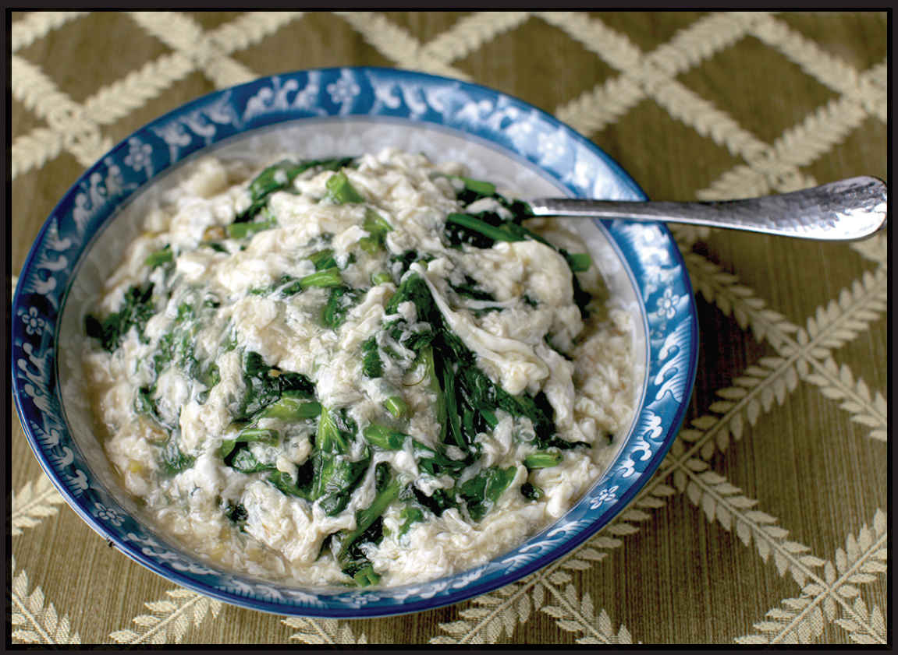

Stir-Fried Greens Technique 4: With Lobster Sauce
What it works best with: Leafy and sweet greens (such as snow pea or fava greens or spinach) and leafy and strong greens (such as tatsoi, chrysanthemum, and watercress)
SNOW PEA SHOOTS WITH LOBSTER SAUCE (WITH OR WITHOUT CRABMEAT)
|
Yield Serves 4 |
Active Time 30 minutes Total Time 30 minutes |
This dish is delicious even without the crabmeat, but if you are feeling extra decadent, the combination of sweet crabmeat with sweet greens is unbeatable. On the West Coast, I use picked Dungeness crab, but you should use whatever freshly picked crab is available to you. Chunky king or snow crabmeat is a real treat. If your wallet is feeling a little slim, imitation crabmeat (surimi) can be a perfectly tasty alternative. Snow pea leaves are also called “snow pea shoots” and can be found during the springtime at the farmers’ market or Asian produce market. If you can’t find them, you can use regular pea shoots, watercress, or any other stir-fry green in this book.
Pea shoots with lobster sauce is another one of those dishes I grew up eating at Cantonese seafood restaurants in New York and New England, not realizing how difficult it is to find the dish outside of that region (or knowing anything about its origins). Like Shrimp with Lobster Sauce (here), the dish contains no lobster. Instead, it’s a plate of simple stir-fried greens that is ladled with the same translucent sauce with its deliciously silky (OK, slimy) ribbons of egg white. In fancier restaurants, you could order the dish with chunks of crabmeat cooked into the sauce.*
The combination of seafood and pea shoots exists in other Chinese dishes—crab roe on pea shoots or dried scallops with eggs on pea shoots, for instance—but I have not been able to trace this particular dish back to any specific origins in Asia. I’m fairly certain it’s another brilliant adaptation of Cantonese American chefs.
INGREDIENTS
For the Sauce:
2 tablespoons (30 ml) Shaoxing wine
1 tablespoon (8 g) cornstarch
¾ cup (180 ml) homemade or store-bought low-sodium chicken stock or water
½ teaspoon (2 g) sugar
Dash of freshly ground white pepper
Kosher salt
For the Stir-Fry:
1 tablespoon (15 ml) peanut, rice bran, or other neutral oil
2 teaspoons (5 g) minced garlic (about 2 medium cloves)
2 teaspoons (5 g) minced fresh ginger (about ½-inch segment)
8 ounces (225 g) snow pea leaves, stems torn into 1- to 2-inch pieces (see Note)
2 large egg whites, lightly beaten with a pinch of kosher salt
3 to 4 ounces (90 to 120 g) picked crabmeat (optional)
DIRECTIONS
1For the Sauce: Combine the wine and cornstarch in a small bowl and stir until the cornstarch is dissolved. Add the chicken stock, sugar, white pepper, and a pinch of salt. Set aside.
2BEFORE YOU STIR-FRY, GET YOUR BOWLS READY:
3For the Stir-Fry: Heat a wok over high heat until lightly smoking. Add the oil and swirl to coat. Add the garlic and ginger and stir-fry until fragrant, about 15 seconds. Immediately add the snow pea leaves and stir-fry until the leaves are wilted but still bright green, 1 to 2 minutes (if the greens are having trouble wilting, add a small splash of water). Transfer to a serving platter.
4Return the wok to high heat. Stir the sauce and add to the wok. Bring to a boil. Simmer until the sauce is thick enough to coat the back of a spoon, about 1 minute. Adjust the seasoning with salt and white pepper to taste.
5Drizzle the egg whites and crabmeat (if using) into the sauce, then gently stir it with a ladle or wok spatula until the eggs form tender ribbons, about 30 seconds. Pour the sauce over the top of the greens. Serve immediately.
*With a premium price to boot—a single side dish order would regularly cost upward of $20 in restaurants that offered $5.99 lunch specials. This was a dish I enjoyed only when I went out with my parents and they were footing the bill.